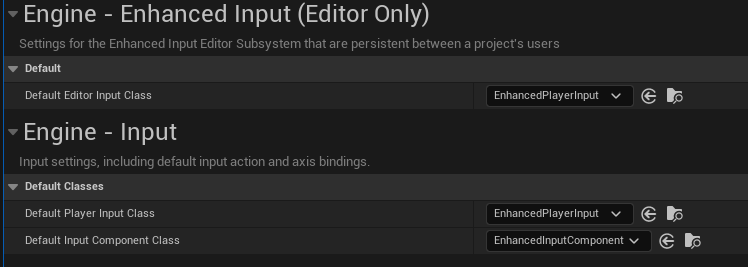

Creación de un prototipo en Unreal con C++
Carlos León
cleon@ucm.es
Crear juegos con Unreal en C++
Ahora que ya hemos visto todo el proceso fundamental de interacción UE con C++, vamos a crear contenido
Vamos a hacer un videojuego tipo Pac-Man sencillo
Vamos a usar assets sencillos (static meshes) para crear paredes de laberinto
(Se puede usar geometría BSP si queremos hacerlo más elaborado)
Habrá un laberinto con puntos blancos (que nos darán una puntuación determinada) y una fruta que deberemos tocar para acabar, rodeada por una celda
En nuestro juego, cuando hayamos conseguido suficientes puntos, la "celda" que rodea la fruta final se levantará y podremos coger la fruta
La celda será un objeto normal físico, y la activación consistirá en que una celda suba (en la posición de la fruta) para que, cuando nos toquemos la fruta, el juego se acabe
Nuestro Game Mode
Como ya sabéis, un modo de juego o Game Mode es el conjunto de reglas de inicio, modificación y terminación de juego (cómo se crean los jugadores, por ejemplo)
Un Game State es el estado en el que está el juego, y es compartido por todos los clientes/jugadores
Es dependiente del Game Mode, y típicamente almacena información global
Añadir componentes al DefaultPawn
Uno de los "problemas" que nos encontramos en Unreal es que, hasta que el juego no se inicia, no se crea realmente el jugador principal
Como no está creado en el editor, no es posible modificar a priori sus propiedades, por ejemplo, sus componentes
En el caso de C++, lo que vamos a hacer es asignarlo desde un Game Mode propio en código
Por defecto, UE nos ha creado una clase que se llamará A[NOMBRE]GameModeBase, y que no hace nada
Nosotros vamos a modificarla y añadir un constructor que establece cuál es el Pawn por defecto:
AMazeGameModeBase::AMazeGameModeBase()
{
// Aún no tenemos `ACPPAdventurer`...
DefaultPawnClass = ACPPAdventurer::StaticClass();
}
Lo siguiente es crear nuestro nuevo jugador principal
Tendrá que ser un Pawn para que el controlador por defecto lo pueda manejar
Creamos un Pawn normal, de C++
Ahora, desde el constructor de nuestro nuevo actor en C++, creamos algunos componentes:
ACPPAdventurer::ACPPAdventurer()
{
PrimaryActorTick.bCanEverTick = true;
// Damos forma para las colisiones
auto shape = CreateDefaultSubobject<USphereComponent>(TEXT("esfera"));
RootComponent = shape;
shape->InitSphereRadius(50.0f);
shape->SetCollisionProfileName(TEXT("Pawn"));
// Así se crea un componente para este actor
auto move = CreateDefaultSubobject<UFloatingPawnMovement>(
TEXT("Movement component"));
move->MaxSpeed = 1200.0f;
}
La clase UFloatingPawnMovement no estará reconocida por el compilador, porque falta el #include

Figura 1: La manera más secilla es buscar la clase en Internet, y en la documentación de Unreal veremos la ruta del #include
Para darle forma física al actor que acabamos de crear, le podemos poner desde C++ código para que sea un cubo
Es igual que en la clase anterior, pero donde ponía sphere, tiene que poner box (por ejemplo)
Como vamos a hacer un juego en tercera persona, creamos un spring arm y una cámara:
auto arm =
CreateDefaultSubobject<USpringArmComponent>(
TEXT("SpringArm"));
arm->SetupAttachment(RootComponent);
auto _camera = CreateDefaultSubobject<UCameraComponent>(
TEXT("CameraPlayer"));
_camera->SetupAttachment(arm);
Figura 2: También podemos crear una escena nueva, y asignarle el Game Mode correspondiente
Gestión de memoria en Unreal Engine
UObjects
Unreal tiene su propia gestión de la memoria
Para ello, la jerarquía de clases tiene UObject, que son objectos (bastante genéricos) con recolección de basura
A no ser que sepamos muy bien lo que estamos haciendo, no hay que crear UObjects con new, sino con los métodos de Unreal:
NewObjectSpawnActorCreateDefaultSubobject
Todos estos métodos llevan el tipo como parámetro de plantilla:
auto input_modifier = NewObject<UInputModifierNegate>(this);
Smart pointers
Igual que en la libería estándar de C++, Unreal tiene punteros inteligentes
Son TUniquePtr, TSharedPtr y TWeakPtr (igual que en std::)
No tienen que ser usados para UObjects, ya que estos tienen un ciclo de vida distinto
TObjectPtr
Unreal 5 tiene una versión más controlada de los punteros a assets en el editor
Reemplazan los punteros "crudos" a assets, haciendo que se automatice la carga perezosa
Además, cuando se construye en una versión que no es de editor, se optimiza
En general, se recomienda su uso como reemplazo para UPROPERTIES (porque el beneficio está en el editor):
UPROPERTY(EditAnywhere)
TObjectPtr<ACPPAdventurer> _adventurer;
(Veremos UPROPERTY en un momento)
TObjectPtr<T>(o simplemente el punto con elUPROPERTY) toma posesión (quizá compartida) de un assetTWeakObjectPtr<T>es un puntero débil sin posesión, pero tiene el coste de comprobar que el objeto no ha sido limpiado (TObjectPtrnullifica las referencias, es más eficiente)TSoftObjectPtr<T>es como unweak, pero tiene funcionalidad para la carga perezosa
Probando carga con TObjectPtr
Añadimos un Actor C++ que tenga una propiedad de editor (UPROPERTY) para establecer su malla:
En el .h:
UPROPERTY(EditAnywhere, Category = "Estetica")
TSoftObjectPtr<UStaticMesh> _malla_externa;
// Esto *no necesita* TSoftObjectPtr porque
// no se va a modificar en el editor
UStaticMeshComponent* _malla_component;
En el constructor:
ADecorador::ADecorador()
{
// ...
auto colision = CreateDefaultSubobject<USphereComponent>(TEXT("esfera"));
RootComponent = colision;
colision->InitSphereRadius(50.0f);
colision->SetCollisionProfileName(TEXT("Pawn"));
_malla_component =
CreateDefaultSubobject<UStaticMeshComponent>(
TEXT("malla"));
_malla_component->SetupAttachment(RootComponent);
}
En BeginPlay:
void ADecorador::BeginPlay()
{
// ...
_malla_component->SetStaticMesh(_malla_externa.LoadSynchronous());
}
Añadimos una instancia a la escena, asignamos su malla, y se verá instanciada al darle a Play
Entrada con Enhanced Input
Entrada hasta UE4
UE4 usa un motor de entrada más sencillo que UE \(\geq 5\)
Enhanced Input
Para que UE reconozca el subsistema de entrada nuevo, hay que asegurarse de que la cadena "EnhancedInput" está en el archivo [NOMBRE_PROYECTO].Build.cs, que estará en el mismo sitio que los .cpp:
PublicDependencyModuleNames.AddRange(new string[] { "Core", "CoreUObject", "Engine", "InputCore", "EnhancedInput" });
En versiones recientes, esto ya estará añadido al crear el proyecto.

Figura 3: Tenemos que asegurarnos (seguramente estará así por defecto) de que el subsistema mejorado está seleccionado por defecto
En la declaración de la clase de nuestro personaje (el .h), creamos punteros a las clases de Enhanced Input que antes hacíamos con Blueprints:
#include "InputMappingContext.h"
#include "EnhancedInputComponent.h"
// ...
// El mapping context
UInputMappingContext* _input_mapping_context;
// Una acción (puede haber más)
UInputAction* _move;
En el constructor, las instanciamos:
_move = CreateDefaultSubobject<UInputAction>(TEXT("MoveAction"));
_input_mapping_context = CreateDefaultSubobject<UInputMappingContext>(TEXT("NormalMapping"));
En en .cpp de nuestro Pawn vamos a configurar la entrada para que enlace los mappings y las acciones:
#include "EnhancedInputSubsystems.h"
#include "Engine/LocalPlayer.h"
// ...
void ACPPAdventurer::SetupPlayerInputComponent(UInputComponent* PlayerInputComponent)
{
Super::SetupPlayerInputComponent(PlayerInputComponent);
auto controller = Cast<APlayerController>(GetController());
if (auto system = controller->GetLocalPlayer()->GetSubsystem<UEnhancedInputLocalPlayerSubsystem>()) {
if (_input_mapping_context) {
// el "1" es la prioridad del mapeo, cuanto más alta, más prioritario
system->AddMappingContext(_input_mapping_context, 1);
_move->bConsumeInput = true;
_move->ValueType = EInputActionValueType::Axis1D;
// hay más maneras de instanciar la tecla (FKey("W"))
_input_mapping_context->MapKey(_move, EKeys::W);
auto & mapping = _input_mapping_context->MapKey(_move, EKeys::S);
mapping.Modifiers.Add(NewObject<UInputModifierNegate>(this));
}
}
auto eic = Cast<UEnhancedInputComponent>(PlayerInputComponent);
eic->BindAction(_move, ETriggerEvent::Triggered, this, &ACPPAdventurer::Move);
}
Y el método Move (que está en la clase como un método normal), usa el valor del eje para mover el Actor
void ACPPAdventurer::Move(const FInputActionValue& v) {
FVector forward = GetWorld()->
GetFirstPlayerController()->
PlayerCameraManager->
GetCameraRotation().Vector();
AddMovementInput(forward, v.GetMagnitude());
}
Con esto ya podemos hacer los movimientos en 4 direcciones o, mejor aún, que el personaje rote cuando usamos izquierda o derecha
Buscad cómo rotar en la ayuda de UE
Haremos otro BindAction() para la rotación
Y moveremos la rotación del personaje
Los FRotator se pueden sumar con el operador + (está sobrecargado)
Propiedades para el editor
Una de las macros más usadas es UPROPERTY
UPROPERTY se usa para hacer que ciertos atributos de nuestro código (atributos de clase) se expongan al editor y puedan ser gestionados gráficamente
Por ejemplo, podemos configurar la altura de la celda que rodea a la fruta con esta técnica
Creamos un Actor para la celda (como blueprint)
Figura 4: Se puede hacer la celda con varios Cube en el blueprint
Y creamos un componente en C++ para la celda
Vamos a nuestro componente de subir la celda y creamos un atributo de altura final que tendrá cuando tengamos todos los puntos:
private:
double _height = 90.0f;
Para que ese atributo tenga uso en el editor, tenemos que marcarlo como propiedad de Unreal
URPOPERTY es para eso:
private:
UPROPERTY(VisibleAnywhere)
double _height = 90.0f;
Importante
Como ya dijimos, no olvidemos hacer la entidad Movable para que sus propiedades físicas se puedan cambiar durante la ejecución
Figura 5: Hacer un objeto Movable
Podemos hacer propiedades de varios tipos
Por ejemplo, una propiedad de cadena de texto nueva, esta vez que se pueda editar desde cualquier parte del editor de Unreal
Será algo parecido a esto (atención a EditAnywhere):
private:
UPROPERTY(EditAnywhere)
FString _text;
Para que aparezca un tool tip cuando pasamos el cursor por una propiedad:
private:
// Un cometario encima es interpretado como documentación
UPROPERTY(EditAnywhere)
FString _text1;
UPROPERTY(EditAnywhere, meta=(ToolTip="Con argumentos también"))
FString _text2;
La versión con meta tiene prioridad sobre el comentario
Se pueden hacer categorías y subcategorías:
UPROPERTY(EditAnywhere, Category = "Estetica|Mallas")
Podéis encontrar los muchos parámetros que se pueden poner en la documentación de las propiedades y los metadatos
Relaciones entre entidades
Hay una relación de dependencia entre nuestro personaje principal y nuestra celda
Necesitamos una manera de decirle a la celda con qué Actor tiene que interactuar
Crearemos una UPROPERTY(EditAnywhere) en el componente de subida que sea de tipo ACPPAdventurer
Idealmente, estamos creando un componente genérico que permita trabajar con cualquier ACPPAdventurer
Pero nuestro héroe se crea en tiempo de ejecución, no antes
Accediendo a distintas entidades desde C++
En Unreal, los cuerpos físicos son Pawn, y son movidos por controladores
En este caso, por un PlayerController
La idea es que, desde el punto de vista de la arquitectura, el controlador pueda ser sustituido, y un mismo Pawn pueda ser manejado a través de diferentes controladores
Hay varias alternativas para arquitecturas de componentes
En las más puras, los componentes no hablan entre sí directamente, y no pueden interactuar
(Por ejemplo, las arquitecturas de paso de mensajes)
Hasta ahora habíamos trabajado con acceso desde abajo hasta arriba, de forma que, con GetOwner(), habíamos tenido acceso a la entidad contenedora
Pero es muy útil poder acceder de arriba a abajo, es decir, desde la entidad superior, a la entidad que está incluida en ella
GetWorld
GetWorld nos da acceso a todo el mundo
Todos los juegos en Unreal, por defecto, tienen un controlador principal
Este controlador es parte del mundo, así que, desde el mundo, podemos acceder a él con GetFirstPlayerController()
Cuando un escenario arranca en Unreal, por defecto, el controlador es asignado a un jugador, a un Pawn
Por tanto, podemos acceder a ese Pawn:
APawn * pawn =
GetWorld()->GetFirstPlayerController()->
GetPawn();
Por lo tanto, vamos a hacer que, cuando se arranque el juego, nuestra celda enlace la propiedad del componente de subida al jugador principal
Lo haremos en el BeginPlay() del componente de bajada, aunque estemos creando por ahora una dependencia incorrecta
(Recordad GetWorld()->GetFirstPlayerController()->GetPawn())
Nos pasará que GetPawn nos devuelve un Pawn y no un CPPAdventurer
Pero podemos hacer casting
auto *pawn = GetWorld()->
GetFirstPlayerController()->
GetPawn();
// puede devolver `nullptr` si el casting falla
_adventurer = Cast<ACPPAdventurer>(pawn);
Así, vamos a hacer que en el TickComponent apropiado (es decir, en cada frame del juego, en el componente):
- cuente los puntos del héroe
- y, si tiene más puntos que un umbral dado (¡hacemos un
UPROPERTY!), la celda se eleve
FindComponentByClass
Aunque en Unreal se pueden hacer muchas alternativas, es bastante común que un componente de la entidad quiera acceder a otro componente de la misma entidad
Para eso tenemos el método FindComponentByClass:
[UClaseDelComponente] componentHandle =
GetOwner()->FindComponentByClass<UClaseDelComponente>();
Ojo con los colliders
Tanto los Collider como los Trigger detectan contactos, pero los Collider tienen en cuenta la física
Para que algo en Unreal tenga entidad física (colisiones físicas, por ejemplo), tenemos que cambiar sus propiedades de colisión
Las físicas en Unreal son muy complejas (¡y potentes!), nosotros vamos a centrarnos en los aspectos básicos aquí
Es muy posible (por ejemplo, la fruta) que no tenga ninguna información sobre colisión, así que tendremos que crearla
(Aunque si lo habéis hecho paso a paso, debería tener una malla de colisión por defecto)
En el menú Collision podemos añadirle una colisión. Recordemos que estaremos editando la malla, con lo que todos los objetos que usen esa malla tendrán información de colliders
- Hacemos clic derecho sobre la barrera o en el World Outliner
- Elegimos "Edit [Nombre de la barrera]"
Collision\(\rightarrow\)Add Box Simplified Collision(por ejemplo)
Ahora ya tenemos un pequeño juego
Hay un desafío, y hay que seguir las reglas preestablecidas para solucionarlo
TArray
Como ya vimos, Unreal usa su propia estructura de array: TArray
Es una estructura con genéricos (igual que vector en STL)
Imaginemos que queremos saber, por ejemplo, cuántos puntos tenemos, almacenando los valores de cada punto que toquemos
Además, TArray implementa los métodos apropiados de C++11 para ser usado con la sintaxis moderna de for:
TArray <int> arrayDePuntos;
for(int a : arrayDePuntos) {
a->...
}
Vamos, en nuestro héroe, a tener un TArray de enteros (un atributo de la clase)
Cada elemento serán los puntos que dé cada punto blanco que nos hemos "comido"
Tendremos métodos para sumar puntos (por parámetro) y un método para devolver los puntos actuales
Comer puntos
Falta hacer la lógica de las "gemas"
Van a ser actores que tengan un componente con un UPROPERTY de tipo entero que almacene los puntos que da cada instancia
Cuando despleguemos gemas por el mapa, vamos a ir, uno a uno, estableciendo los puntos que otorga cada una
Obviamente se puede poner un valor por defecto en la clase de las gemas, y luego modificarlo si se quiere
En la celda pondremos un UPROPERTY con los puntos totales que son necesarios para subirla
El componente de subir la celda, en su TickComponent, comprobará si los puntos totales del actor superan los de la propiedad anterior
Para que el personaje no choque con los elementos no físicos, hay que cambiar las propiedades
Para que las cosas solapen (es decir, no colisionen), es mejor cambiar las propiedades físicas a OverlapAll
Figura 6: En el blueprint de las gemas, en la esfera que tienen, establecemos "overlap"
Para asignar los puntos al jugador, vamos a hacer, desde el componente de los puntos, que cuando se haga overlap con el jugador, se le sumen los puntos
Detectar overlapping sólo hay que llamar al método:
actor->IsOverlappingActor(otroActor) // booleano
También haremos que la gema se destruya con Destroy()
// Dentro del componente que detecta overlap con el jugador
GetOwner()->Destroy();
Y, una vez que sabemos hacer el "overlap", usamos el mismo método con la fruta para terminar el juego
Necesitaremos que la gema (y la fruta) tengan una referencia al jugador principal, igual que la celda
Para acabar
Una vez que solapen actor y fruta, vamos a pasar de escena
Para ello, simplemente creamos un nuevo componente C++ para la fruta, y en su TickComponent:
// si
GetOwner()->IsOverlappingActor(/* player */)
// entonces
UGameplayStatics::OpenLevel(this, TEXT("Fin"));
Ejercicios
- Implementar la mecánica básica del juego
- No hemos contado cómo hacer la rotación, pero es igual que el avance
- Mejorar el gameplay haciendo que los giros del protagonista sean más suaves
- Colocar mejor la cámara